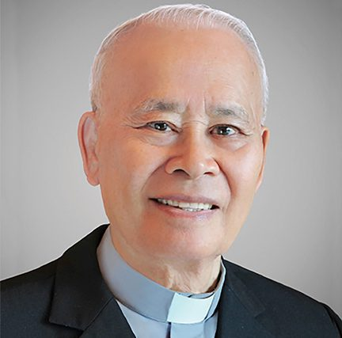

Lịch Sử Chương Trình
Sứ mạng - Hồn Tông Đồ Song Đôi
Năm 1987, Cố Linh Mục Phêrô Verona Chu Quang Minh, S.J., Dòng Tên, thành lập Chương Trình Thăng Tiến Hôn Nhân Gia Đình dành cho cộng đồng Công Giáo Việt Nam hải ngoại, những gia đình đã rời Việt Nam trong những năm chiến tranh, từ năm 1954 đến năm 1975. Chương trình giúp các gia đình gìn giữ đức tin Công Giáo và những giá trị gia đình truyền thống trong môi trường sống mới.
Chương trình giúp các đôi hôn nhân hiểu biết và phát triển mối liên hệ vợ chồng, giữa cha mẹ và con cái, cũng như với gia đình hai bên, bạn hữu và Cộng Đồng Dân Chúa qua tinh thần “Hồn Tông Đồ Song Đôi”.
Chương trình khởi đầu tại San Diego ngày 13 tháng 6 năm 1987 và tiếp tục nhận được nhiều sự ưu ái và tiếp nhận khắp mọi nơi, cho nên Chương Trình được đưa về chia sẽ với cộng đồng Công Giáo tại Việt Nam năm 2003.
Khởi Nguồn
Lịch sử gia đình là lịch sử tình thương. Khi tạo dựng con người, Thiên Chúa đã lập nên gia đình đầu tiên, và Chúa Kitô đã chọn sinh ra trong một gia đình để khởi đầu công cuộc cứu thế. Trước nguy cơ đổ vỡ của các gia đình trong trào lưu xã hội mới, Cha Chu Quang Minh cùng với Giáo Hội thấy rằng xây dựng lại nền tảng gia đình là nhu cầu cấp thiết của thời đại.
- 1986Tháng 9Cha Chu Quang Minh sáng lập Chương Trình tại Wichita, tiểu bang Kansas, áp dụng phương pháp cảm nghiệm vào lãnh vực tâm lý đạo đức gia đình.
- 1987Ngày 13 tháng 6Khóa Căn Bản I được mở tại đồi Marywood, Orange County, cùng với văn phòng Đạo Binh Hồn Nhỏ. Cha Giám Đốc Đỗ Thanh Hà công nhận đây là một sinh hoạt chính thức của Cộng Đồng.
- 1991Tháng 12Khóa 15, khóa đầu tiên tại Bắc California.
- 1994Ngày 28 tháng 10Đức Thánh Cha Gioan Phaolô II ban phép lành và ký vào huy hiệu của Chương Trình.
- NayChương Trình đã phát triển trên nhiều tiểu bang tại Hoa Kỳ và nhiều quốc gia trên khắp thế giới.
Bốn Mục Đích
Tăng thêm đạo đức bản thân
Liên hệ giữa mình với Chúa: cảm nghiệm sâu xa sự hiện hữu của Chúa như Vua, như Cha và như Bạn trong đời sống.
Tăng thêm thông cảm vợ chồng
Biết thực hành những điều cụ thể để vợ chồng dễ thông cảm, nhờ đó thương yêu và gần gũi nhau hơn.
Tăng thêm phương pháp giáo dục con cái
Liên hệ giữa cha mẹ và con cái: khi cha mẹ thay đổi với trái tim mới, con cái được gần gũi, cảm thông trong tình thương.
Tăng thêm hồn tông đồ song đôi
Liên hệ với tha nhân: vợ chồng cùng một tấm lòng “thương yêu gần gũi bằng việc làm” để phục vụ bất cứ ai mình gặp.
Cha Sáng Lập

- Cố Linh mục
- Phêrô Verona Chu Quang Minh, S.J., Dòng Tên
- Sinh năm
- 1938, làng Thọ Ninh, Bắc Ninh
- Thụ phong
- Năm 1968
- Chuyên môn
- Tiến sĩ tâm lý hướng dẫn
- 1938Chào đời tại làng Thọ Ninh, Bắc Ninh, là con út trong bốn người con trai của ông Phêrô Chu Quang Đại và bà Maria Nguyễn Thị Dự.
- 1949–1962Đậu vào Chủng Viện An Tôn, Ninh Đạo Ngạn. Di cư vào Nam năm 1954 và tiếp tục học tại các chủng viện Bắc Ninh (Thủ Đức), Phanxicô Bùi Chu, Thánh Phaolô Phát Diệm, Xuân Bích và Đại Chủng Viện Lê Bảo Tịnh.
- 1962–1964Bị động viên vào quân trường Thủ Đức, khóa 14, làm sĩ quan tâm lý chiến. Giải ngũ, thầy về Đại Chủng Viện Thánh Giuse, Sài Gòn, sinh hoạt với Đạo Binh Đức Mẹ, Thiếu Nhi Thánh Thể và Thanh Sinh Công.
- 1968Thụ phong linh mục. Làm giáo sư chủng viện Thánh Quý, Cần Thơ, rồi hiệu trưởng trung học Phụng Sự, Phụng Hiệp.
- 1972trở điDạy tâm lý cho nhiều lớp 12 tại Thủ Đức và Gò Vấp, làm hiệu trưởng trung học Thánh Minh, Biên Hòa.
- 1975Sang Hoa Kỳ. Cùng cha Đỗ Quang Biên và cha Nguyễn An Ninh tổ chức các trại Thanh Niên tại Nam và Bắc California.
- 1980Ngày 15 tháng 8Hoàn tất tiến sĩ tâm lý hướng dẫn, đúng ngày lễ Đức Mẹ Lên Trời.
- 1981Vào Dòng Tên, giảng Linh Thao. Từ năm 1977 đến năm 1990 cha viết khoảng 150 bài báo, sau in thành 6 cuốn sách tâm lý.
- 1986–1987Chuyên về tâm lý gia đình, sáng lập Chương Trình Thăng Tiến Hôn Nhân Gia Đình và mở Khóa Căn Bản I.
- 1991trở điTuyên úy sáng lập Hội Bảo Trợ Ơn Gọi Nữ Tu Việt Nam.
Ý Nghĩa Huy Hiệu
Tình Yêu
Tình yêu tuyệt đỉnh là Thiên Chúa Ba Ngôi. Ý nghĩa “Một mà Ba” hiện ra qua nhiều con số ba: ba cạnh, ba góc, ba vòng tròn, ba hình như những cánh tay vươn lên.
Khiêm Nhường
Năm phần đối xứng tượng trưng cho mười cánh tay chắp lại, phủ phục van nài, vì nhận mình là “tro bụi và trở về tro bụi” (St 3:19).
Quây Quần Hợp Nhất
Năm phần luân chuyển ba màu vàng, đỏ, trắng, như những cánh tay khác màu da, phong tục, nhưng khắng khít bên nhau, cùng hướng về Thánh Giá Tình Yêu. Đó là bầu khí tin cậy, cởi mở.
Thông Cảm
Ba vòng tròn thông nhau, “không có đường chỉ ngăn cách” (Ga 19:23). Hai vòng giữa bằng nhau để nói sự tương kính; vòng thứ ba bị lem nhưng nằm ở trên, nhắc “chớ khinh dể một người nào” (Mt 18:10).
Đau Khổ Tiến Tới Vinh Quang
Thánh Giá ngự giữa huy hiệu: Chúa đã chịu chết nhưng sống lại trong vinh quang, nhắc mỗi người vững lòng tin khi gặp thử thách.
Bình An Nhân Loại
Ba chữ dưới huy hiệu: Song An là bình an giữa thể xác và tâm hồn, nhất là với Thiên Chúa; Song Hòa là hòa với tha nhân; Peace ở giữa nói lên tình liên đới nhân loại.
Tông Đồ Song Đôi
Mười ngôi sao làm nền: Mười Điều Răn tóm lại trong Kính Chúa, Yêu Người, và Sáu Điều Răn Hội Thánh (hai cặp ba ngôi sao). Các ngôi sao xếp thành từng cặp, từng đôi.
Tại Giáo Phận San Diego
Chương Trình tại San Diego hình thành cùng lúc với các giáo phận miền Nam California như Los Angeles, San Bernardino và Orange, khi Cha Sáng Lập ra mắt Chương Trình qua những khóa căn bản đầu tiên.
- 1987Ngày 13 tháng 6Các cặp từ San Diego dự Khóa Căn Bản đầu tiên tại đồi Marywood, Orange County.
- 1989Ngày 1 tháng 6Thành lập Ban Điều Hành đầu tiên của Giáo Phận San Diego.
- 1998Tháng 1Ban Điều Hành Trung Ương có hai thành viên từ San Diego: Cha Giuse Lại Văn Đoàn (Phó Tổng Linh Nguyền) và SN Bảo – Phước (Phó Chủ Nguyền Trung Ương). Song nguyền San Diego đi trợ nguyền các khóa căn bản khắp Hoa Kỳ, Âu Châu, Úc Châu và Canada.
- 2000Tháng 10Đã có 4 linh mục và hơn 200 cặp song nguyền tham dự khóa căn bản, cùng nhiều khóa tu nguyền do Cha Sáng Lập hướng dẫn.
- 2002Khóa XXIV với 24 cặp (tháng 4) và khóa căn bản #210 (tháng 7). Mỗi cộng đoàn có 5 hay 6 liên gia, khoảng 25 liên gia trong toàn Chương Trình. Vài năm sau, số liên gia giảm dần rồi gần như ngưng hoạt động.
- 2009Ngày 1 tháng 8Bầu lại Ban Điều Hành sau 20 năm.
- 2009Ngày 4–6 tháng 12Khóa căn bản #435 tại cộng đoàn Chúa Thánh Linh với 51 cặp, nhiều cặp thuộc giới trẻ.
- 2010Tháng 3Các liên gia được thành lập lại, khởi đầu với Liên Gia Thánh Giuse. Xem các Liên Gia
- 2015Ngày 21–23 tháng 8San Diego gửi 8 cặp dự khóa căn bản #634 do Giáo Phận Orange tổ chức.
- 2015Ngày 10 tháng 10Hội thảo gia đình “Trái Tim Yêu Thương Trong Gia Đình” tại hội trường cộng đoàn Chúa Thánh Linh, mở cho cả người trong và ngoài Chương Trình.
- 2017Ngày 10 tháng 2Cha Giuse Đỗ Quang Minh được Cha Sáng Lập và Cha Linh Nguyền bổ nhiệm làm Phó Linh Nguyền.
Sinh Hoạt
Họp Ban Điều Hành
Ban Điều Hành là cái đầu, là con tim của Chương Trình, họp định kỳ luân phiên tại tư gia các thành viên.
Mỗi tháng một lần
Họp Song Nguyền
Các song nguyền gặp nhau chia sẻ Lời Chúa và cầu nguyện, cảm nghiệm mình được nâng đỡ và cũng nâng đỡ nhiều người.
Chúa Nhật cuối tháng
Họp Liên Gia
Liên gia là đơn vị cốt yếu, là gia đình thứ hai, nơi mỗi người được sống trong tin cậy, cởi mở như ruột thịt.
Hằng tháng
Sinh Hoạt Hằng Năm
Dịp để mọi song nguyền trở về với Chương Trình: Lễ Bổn Mạng Thánh Gia Thất, Tiệc Tất Niên – Tân Niên và Picnic hè.
Picnic cuối tháng 8
Ban Thường Vụ Qua Các Nhiệm Kỳ
Nhiệm kỳ 2026–2028
- Cha Linh Nguyền
- Giuse Đỗ Quang Minh
- Chủ Nguyền
- SN Sâm - Huyền
- Phó Nguyền Nội Vụ
- SN Hoàng - Sương
- Phó Nguyền Ngoại Vụ
- SN Tommy - Kim
- Phụ Tá Giám Nguyền Nội Dung
- SN Hiền – Cúc
- Trưởng Ban Song Nguyền
- SN Ngân – Thoa
- Trưởng Ban Liên Gia
- SN Hòa – Trang
- Trưởng Ban Tài Chánh
- SN Tuấn – Linh
- Ký Nguyền
- SN Minh – Thúy
- Quỹ Nguyền
- SN Hoàng – Thu
- Trưởng Ban Ẩm Thực
- SN Hồng – Hương
- Trưởng Ban Sinh Hoạt
- SN Nhật – Oanh
- Trưởng Ban Truyền Thông
- SN Tùng – Nhiên
Nhiệm kỳ 2023–2026
- Cha Linh Nguyền
- Giuse Đỗ Quang Minh
- Chủ Nguyền
- SN Dương – Mai
- Phó Nguyền Nội Vụ
- SN Chính – Lan
- Phó Nguyền Ngoại Vụ
- SN Hoàng – Sương
- Phụ Tá Giám Nguyền Nội Dung
- SN Hiền – Cúc
- Trưởng Ban Song Nguyền
- SN Vượng – Thủy
- Trưởng Ban Liên Gia
- SN Hòa – Trang
- Trưởng Ban Tài Chánh
- SN Tuấn – Sương
- Ký Nguyền
- SN Hà – Định
- Quỹ Nguyền
- SN Thăng – Kim
Nhiệm kỳ 2019–2022
- Cha Linh Nguyền
- Giuse Đỗ Quang Minh
- Chủ Nguyền
- SN Chính – Lan
- Phó Nguyền Nội Vụ
- SN Dương – Mai
- Phó Nguyền Ngoại Vụ
- SN Hoàng – Sương
- Phụ Tá Giám Nguyền Nội Dung
- SN Hiền – Cúc
- Trưởng Ban Song Nguyền
- SN Sâm – Huyền
- Trưởng Ban Liên Gia
- SN Hòa – Trang / SN Thăng – Kim
- Trưởng Ban Tài Chánh
- SN Bảo – Hoa
- Ký Nguyền
- SN Hà – Định
- Quỹ Nguyền
- SN Tùng – Mai
Nhiệm kỳ 2016–2019
- Cha Linh Nguyền
- Giuse Lại Văn Đoàn / Giuse Đỗ Quang Minh
- Chủ Nguyền
- SN Vượng – Thủy
- Phó Nguyền Nội Vụ
- SN Dương – Mai
- Phó Nguyền Ngoại Vụ
- SN Sâm – Huyền
- Phụ Tá Giám Nguyền Nội Dung
- SN Hiền – Cúc
- Trưởng Ban Song Nguyền
- SN Chính – Lan
- Trưởng Ban Liên Gia
- SN Hòa – Trang
- Ký Nguyền
- SN Hoàng – Sương
- Quỹ Nguyền
- SN Thăng – Kim
Nhiệm kỳ 2006–2016
- Cha Linh Nguyền
- Giuse Lại Văn Đoàn
- Chủ Nguyền
- SN Đoàn – Châu
- Phó Nguyền Nội Vụ
- SN Bảo – Phước
- Phó Nguyền Ngoại Vụ
- SN Ninh – Hữu
- Trưởng Ban Song Nguyền
- SN Định – Chi
- Trưởng Ban Liên Gia
- SN Tốn – Oanh
- Ký Nguyền
- SN Quang – Hương / SN Ngân – Thoa
- Quỹ Nguyền
- SN Thảo – Nhung / SN Hổ – Liên / SN Phương – Mai / SN Nghĩa – Lan
Tiên khởi, năm 1989
- Cha Linh Nguyền
- Giuse Đỗ Quang Biên
- Chủ Nguyền
- SN Bảo – Phước
- Phó Nguyền Nội Vụ
- SN Đoàn – Châu
- Phó Nguyền Ngoại Vụ
- SN Nhiễm – Bổn
- Trưởng Ban Song Nguyền
- SN Định – Chi
- Trưởng Ban Liên Gia
- SN Tốn – Oanh
- Ký Nguyền
- SN Hổ – Liên
- Quỹ Nguyền
- SN Sơn – Loan